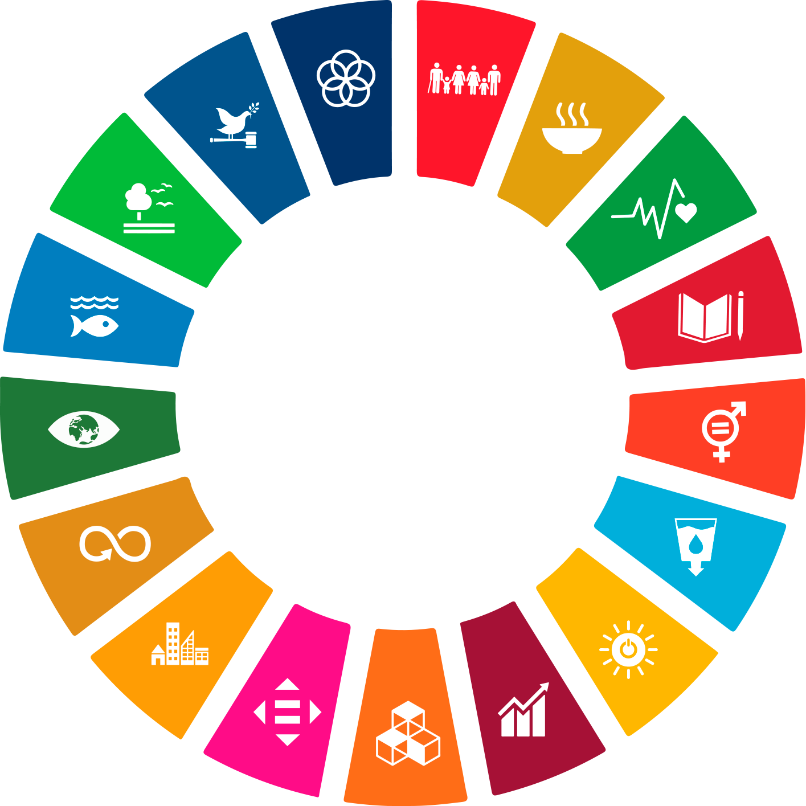
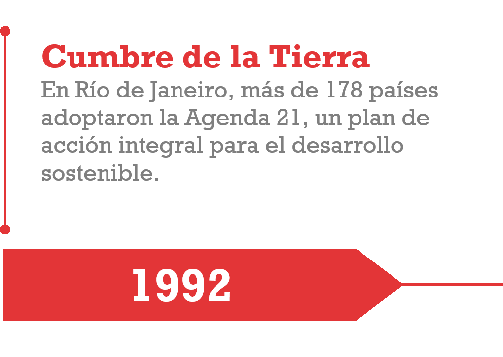
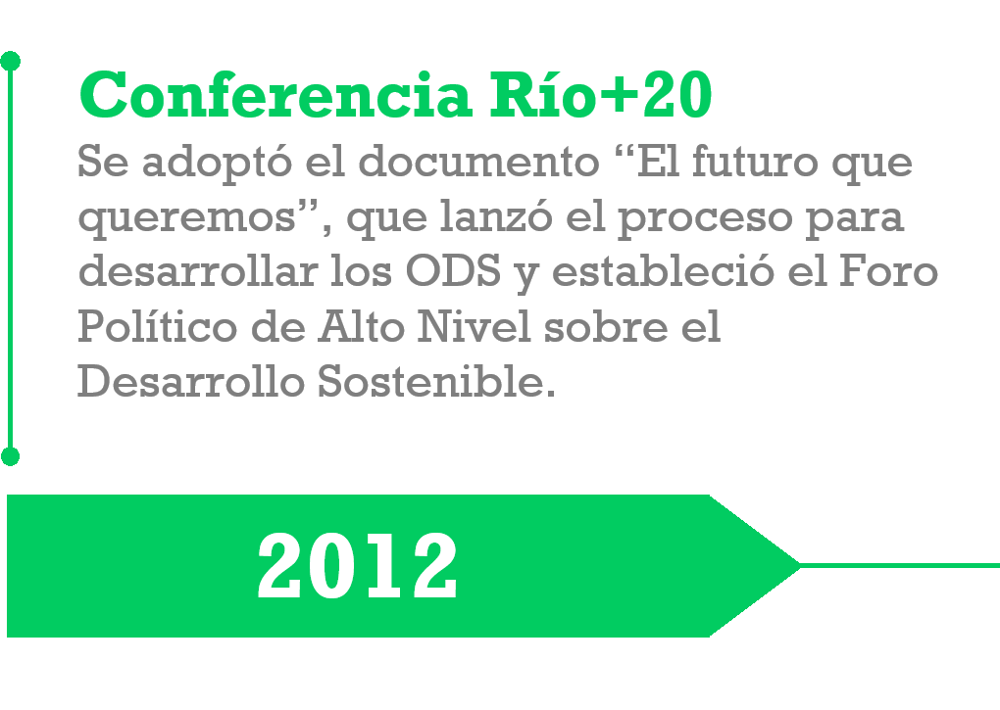
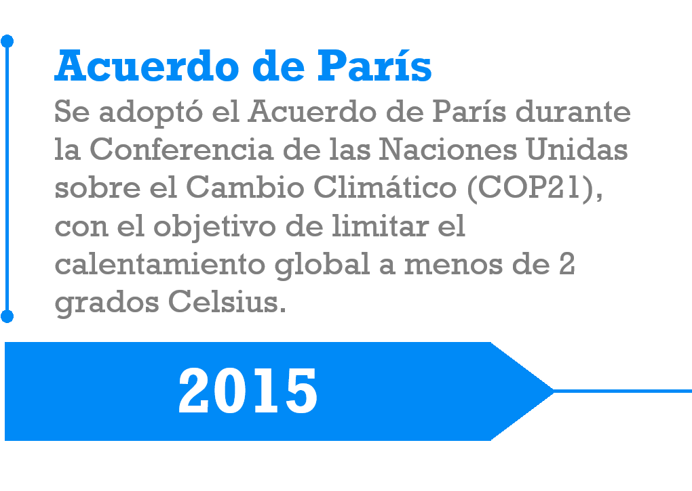
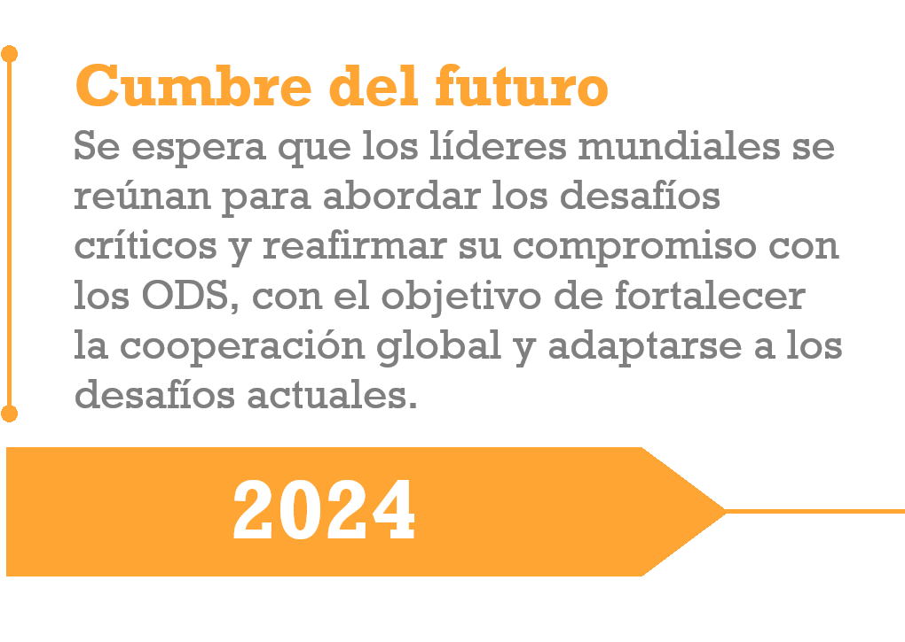
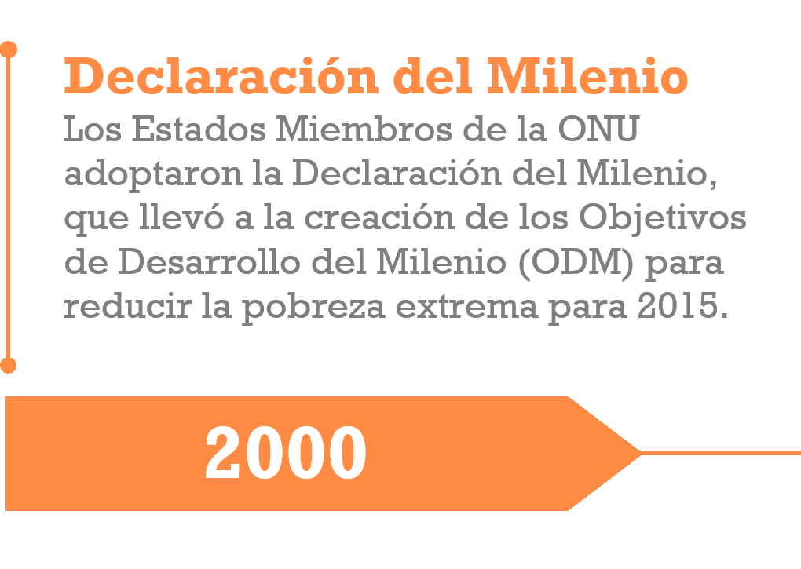
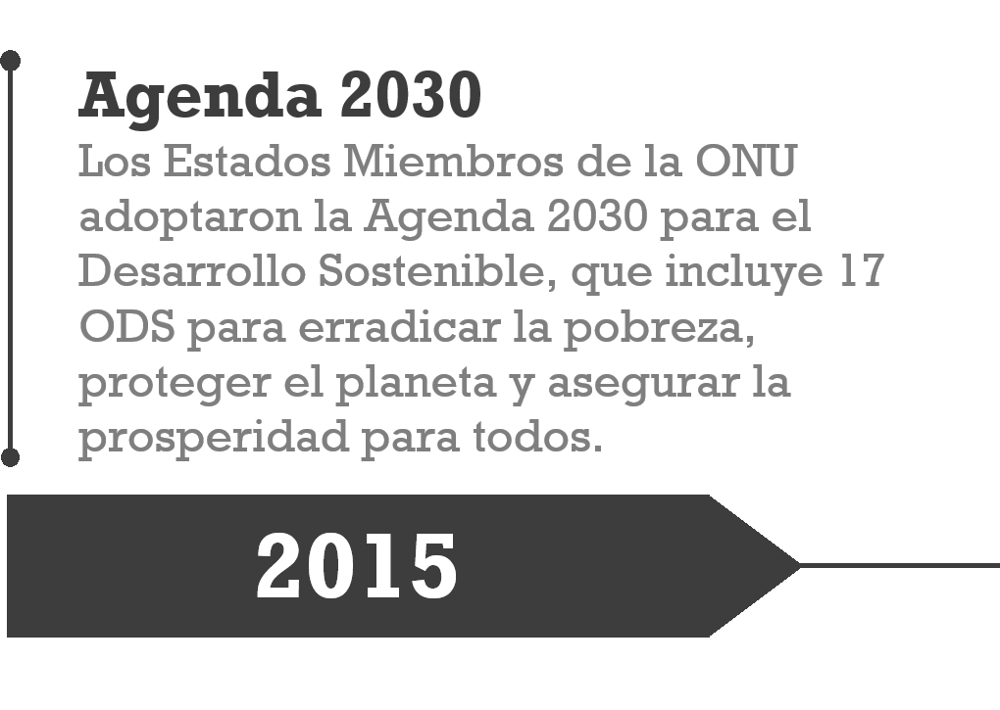
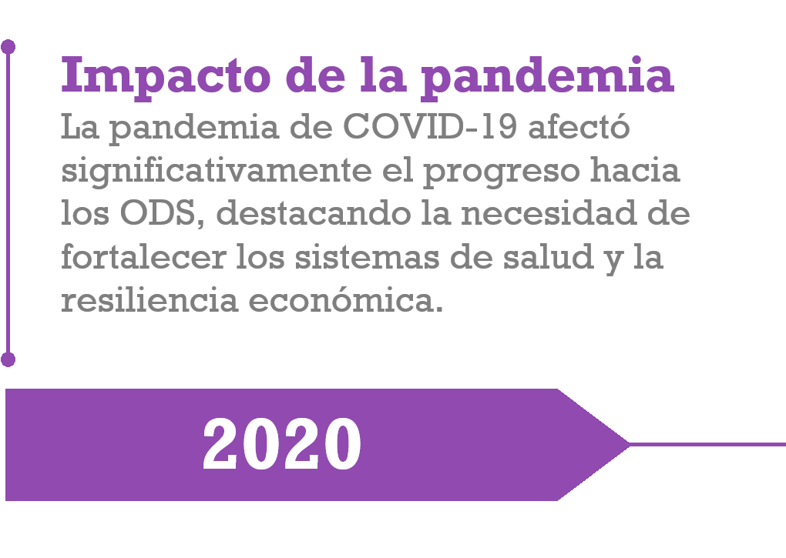

Objetivos De Desarrollo Sostenible
En este sitio mostramos la información sobre esos objetivos y
los esfuerzos que la ONU y sus socios están llevando a cabo
para construir un mundo mejor


Historia
Aquí se describe la historia de los Objetivos de Desarrollo Sostenible y su evolución a lo largo del tiempo.
¿Qué Es?
Esta sección explica qué son los ODS y por qué son importantes para el desarrollo sostenible.
Importancia Global
Descripción sobre la importancia de los ODS a nivel global y su impacto en la sociedad.






